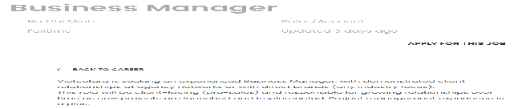
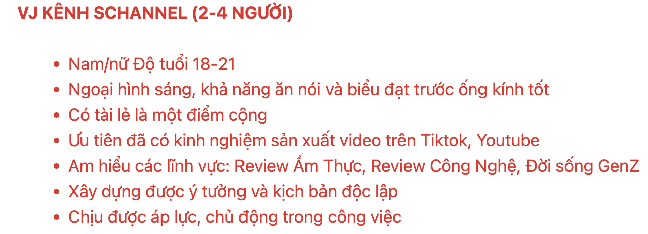
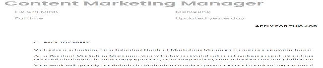
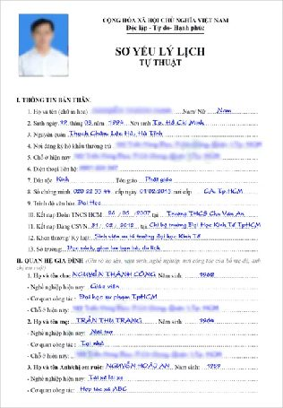
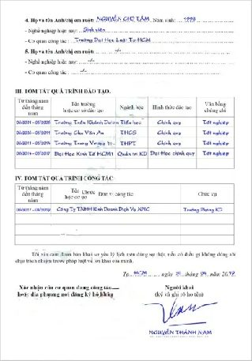
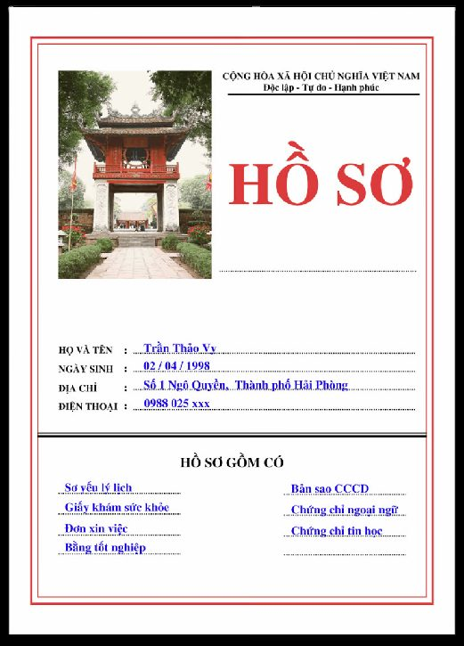

Compose a Cover Letter
to Apply for a New Job
Viết thư xin việc để ứng tuyển một công việc mới
You are applying for a new job and have shortlisted three job ads. All of them ask for a cover letter, so you'll choose the one you like most and draft a cover letter that describes your previous experience or qualifications and the qualities that make you a good fit.
Navigate sections using the left sidebar. Type answers directly into the input fields. Activities marked 💬 are for discussion — write your ideas in the text areas. Use Check Answers for exercises with fixed answers.
| Nội dung | Answer |
|---|---|
| Nói rõ đã tìm thấy công việc này bằng cách nào | |
| Nói rõ vì sao bằng cấp, chuyên môn và kinh nghiệm trước đây giúp mình làm tốt công việc ứng tuyển | |
| Nói về thành tựu đã đạt được | |
| Giới thiệu lý do của thư xin việc | |
| Giới thiệu về bản thân và vị trí muốn ứng tuyển | |
| Lưu ý người đọc về những tài liệu gửi kèm thư xin việc (hồ sơ xin việc, CV…) | |
| Kí tên | |
| Chào hỏi người nhận thư (tên gì, vị trí nào trong công ty) | |
| Nói rõ mong muốn nhận được hồi âm và cơ hội phỏng vấn | |
| Cảm ơn nhà tuyển dụng đã dành thời gian và công sức để đọc thư | |
| Nói về các ưu điểm của bản thân phù hợp với yêu cầu công việc |
Also available as an H5P activity.
You are applying for a new job and you've shortlisted these three job ads. All of them ask for a cover letter, so select the job you like most and draft a cover letter. The cover letter should:
- describe your previous experience OR the qualifications or training you have received that prepared you for the job;
- describe the qualities you have that make you a good fit for the job.



Thông qua [website Timviec.com.vn], tôi được biết quý công ty đang cần tuyển vị trí [vị trí công việc]. Tôi mong muốn được thử sức mình trong môi trường làm việc hết sức năng động của quý công ty. Ngoài có chuyên môn và bằng cấp phù hợp, tôi cũng có kinh nghiệm về [lĩnh vực ứng tuyển] nên tôi tự tin có thể đảm nhiệm tốt vai trò này tại [nơi ứng tuyển].
Như đã đề cập trong hồ sơ đính kèm, tôi đã [...1...]. Ngoài ra, tôi còn có kinh nghiệm làm việc tại [nơi làm việc cũ] ở vị trí [vị trí cũ]. Khi làm việc tại vị trí này, tôi đã [...2...]. Tôi cũng đã được bạn bè và đồng nghiệp ghi nhận là một nhân viên [...3...]. Tôi tin rằng tất cả những điều này là những nền tảng quý báu có thể giúp tôi hiểu rõ và đáp ứng tốt yêu cầu của [vị trí ứng tuyển] tại quý công ty.
Cảm ơn ông/bà đã dành thời gian quý báu để xem xét thư xin việc này. Tôi rất mong có được cơ hội phỏng vấn với quý công ty để có thể trình bày rõ hơn về bản thân cũng như tìm hiểu thêm các yêu cầu chi tiết cho vị trí [tên vị trí công việc] tại [tên công ty].
Trân trọng.
[Chữ kí]
[Họ và tên]
| Nội dung | Answer |
|---|---|
| [...1...] | |
| [...2...] | |
| [...3...] |
| Thách thức (challenges) | |
| Bài học (takeaways) |
Note: a cover letter video is not you reading your cover letter aloud. It should be creative and show people why you're a good fit for the job. Hey Vietcetera is a cover letter video that went viral and got the vlogger the job — watch it for reference.
These adverbs add more information to what has just been said, often to provide further explanation, support, or elaboration.
After “ngoài” and “bên cạnh” we can use a noun phrase; insert “việc” before a clause or verb phrase. Both express additional actions, conditions, or circumstances beyond what has been mentioned.
Ngoài bằng cấp, tôi còn có kinh nghiệm trong lĩnh vực ngân hàng.
Consonant r- never appears in a Sino-Vietnamese word. Sino-Vietnamese words with thanh ngã and thanh nặng are written with d- (diễn viên, hấp dẫn, dĩ nhiên, dũng cảm…). Those with thanh sắc and thanh hỏi are written with gi- (giá, giả…). Sino-Vietnamese words followed by the vowel a with thanh ngang or thanh huyền are written with gi- (gia đình…; exceptions: ca dao, danh dự). With thanh huyền and thanh ngang where the main vowel is not a, write d- (nhân dân, di dân…).
For names, Sino-Vietnamese words are often chosen: someone whose name is pronounced /za/ is likely spelled “Gia”, not “Da” or “Ra”. In the northern accent the three sounds are the same; in the southern and central accents, d/gi and r are distinguished.
du (to travel: du lịch, du học) · ru (to sing a lullaby) · dày / dầy (thick) · giày / giầy (shoe) · (la) rầy (to scold) · dây (string) · dây dưa (to drag out) · giây (second) · rây (to sift)
| # | Câu | Hoàn thành |
|---|---|---|
| 1 | Họ không những có trách nhiệm với công việc mà còn… | |
| 2 | Anh ấy không chỉ có kĩ năng làm việc nhóm mà còn… | |
| 3 | Cô ấy không chỉ luôn đúng hạn mà còn… | |
| 4 | Nhóm của chúng tôi không chỉ hoàn thành công việc nhanh mà còn… | |
| 5 | Phòng Nhân sự không chỉ tuyển dụng mà còn… | |
| 6 | Ứng viên này không những có kĩ năng lãnh đạo mà còn… | |
| 7 | Khi còn làm việc ở ngân hàng Chase, tôi không những bị stress mà còn… | |
| 8 | Ngoài môi trường làm việc tốt, công ty này… | |
| 9 | Bên cạnh việc đào tạo nhân viên, công ty này… | |
| 10 | Ngoài tiếng Anh, công việc này… |
💡 Sample answers
Tôi chịu trách nhiệm không chỉ về dự án A mà còn cả dự án B.
💡 Sample sentences (answers may vary)
2. Ngoài việc hoàn thành công việc đúng thời hạn, tôi cũng luôn sáng tạo trong công việc.
3. Ngoài quản lý nhân viên, một người sếp tốt luôn lắng nghe nhân viên của mình.
4. Để thực hiện một kế hoạch thành công, chúng ta không những cần một đội ngũ giỏi mà còn cần một người quản lý hiểu về nhân viên của mình.
5. Người thành công không những có kĩ năng cao mà còn có tư duy đổi mới.
6. Ngoài việc là nhân viên giỏi của năm, tôi còn là người khởi xướng phong trào chạy bộ trong công ty.
7. Bên cạnh việc phát triển nghề nghiệp, chúng ta cần phát triển tâm hồn.
8. Ngoài toà nhà này, Bảo còn thiết kế nhiều dự án khác cho công ty.
9. Ngoài năng lực, bạn cần xây dựng các kĩ năng mềm.
10. Tập thể dục không chỉ giúp chúng ta cải thiện sức khoẻ mà còn giúp chúng ta cải thiện tinh thần.
Phạm Minh
Click to reveal suggested answers & transcript
2. Thu thập thông tin tuyển dụng và mô tả công việc chi tiết.
3. Có các kĩ năng và kinh nghiệm mà công việc này mô tả hoặc có đam mê — bạn vẫn nên ứng tuyển nếu có đam mê và tự tin rằng bạn có thể học hỏi nhanh.
4. Những thành tựu đã đạt được và giải thích tại sao chúng giúp bạn làm tốt công việc mới.
5. Gửi tất cả các tài liệu đính kèm và đặt tên file rõ ràng.
Đầu tiên, khi bắt đầu hành trình xin việc, điều quan trọng nhất là bạn cần thu thập thông tin tuyển dụng và mô tả công việc một cách chi tiết. Các bạn nhớ nha, thu thập thông tin tuyển dụng và mô tả công việc một cách chi tiết! Tìm hiểu về vị trí ứng tuyển và xem xét xem bạn có phù hợp với công việc này không. Làm sao để biết mình phù hợp? Nếu bạn có các kĩ năng và kinh nghiệm mà công ti này mô tả thì bạn chính là một ứng viên tốt đấy! Nhưng nếu bạn chưa có kinh nghiệm nhưng lại thấy mình có đam mê và có thể làm tốt, hãy vẫn ứng tuyển nhé! Nhiều nhà tuyển dụng muốn có những nhân viên sẵn sàng học hỏi chứ không phải những người có kinh nghiệm nhưng không muốn tìm hiểu thêm.
Ngoài ra, đừng quên trình bày những thành tựu đã đạt được của mình và nói rõ vì sao đó là những nền tảng quý báu giúp bạn làm tốt công việc mới. Hãy tự tin khi nói về chuyên môn và ưu điểm của bản thân.
Ngoài ra, khi nộp hồ sơ trực tuyến, nhớ gửi tất cả các tài liệu đính kèm và đặt tên file rõ ràng nhé. Cũng đừng ngại viết email để hỏi về cơ hội hay kết quả phỏng vấn.
Chúc các bạn tìm được việc làm phù hợp với mình!
Các bạn biết không, tuần tới, chúng ta sẽ tiếp tục nói về bí quyết khi đi phỏng vấn xin việc! Còn bây giờ, chào các bạn và hẹn gặp lại trong podcast lần tới nha!
| # | Câu bạn nghe được |
|---|---|
| 1 | |
| 2 | |
| 3 | |
| 4 | |
| 5 | |
| 6 |
Click to reveal transcript
2. Anh bán dao dừng ở giao lộ rao to “Ai dao đi! Dao to dao nhỏ dao gì cũng có!”
3. Phí giao hàng dao động từ 10 đến 20 ngàn!
4. Anh Giang dành 2 năm để giành học bổng đi du học nghiên cứu về hát ru.
5. Mẹ rầy tôi vì đôi giày thì chật mà tôi lại đi đôi tất quá dày.
6. Rây bột hết 5 giây mà em tôi dây dưa ra vài phút.
💡 Suggested answers
| G | Goal | Create a cover letter video for your wanted job. |
| R | Role | You've decided to apply for a job where you can use Vietnamese and contribute your expertise to the community. |
| A | Audience | Your future employers. |
| S | Situation | You want to work for [the workplace of your choice] because you believe you'll be able to use Vietnamese and contribute your expertise to the community. You want to impress the employers, so you're creating a cover letter video to prove you're a good fit. |
| P | Product | A 3–4 minute cover letter video. Publish your work on the Exit Task Padlet if you want to share publicly. |
| S | Standard | Your video should: 1. explicitly state the position you're applying for; 2. describe previous experience OR the qualifications / training that prepared you for the job; 3. describe the qualities that make you a good fit; 4. be 3–4 minutes long; 5. use appropriate grammar, vocabulary, and sentence structure; 6. have good flow, not reading, and sound intelligible. |
Click 🔊 to hear each word. Flashcards: Quizlet SA · Quizlet NA
Click 🔊 to hear each word. Flashcards: Quizlet SA · Quizlet NA
A distinctive part is the “Sơ yếu lí lịch tự thuật” (autobiographical résumé), certified by the local People's Committee. It gives a comprehensive overview of the applicant's personal and professional journey, tracing back to the background of their parents and siblings. Applicants go to the People's Committee of the ward or village where their household is registered to have it certified.
The dossier also typically includes attested copies of qualifications — academic degrees, certificates, and other credentials — authenticated to assure employers of the candidate's educational background and professional qualifications.



Sources: luatvietnam.vn · cakeresume.com
Quý công ty · Quý vị · Quý khách hàng · Quý vị đại biểu · Quý thầy cô · Quý phụ huynh · Quý y bác sĩ · Quý ông quý bà · Quý khán giả · Quý Phật tử
Note the word order: khách quý = honored guest, while quý khách = valued passengers / customers.